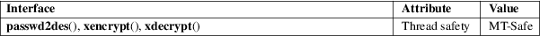

xencrypt, xdecrypt, passwd2des − RFS password encryption
Standard C library (libc, −lc)
#include <rpc/des_crypt.h>
void passwd2des(char *passwd, char *key);
int
xencrypt(char *secret, char
*passwd);
int xdecrypt(char *secret, char
*passwd);
WARNING: Do not use these functions in new code. They do not achieve any type of acceptable cryptographic security guarantees.
The function passwd2des() takes a character string passwd of arbitrary length and fills a character array key of length 8. The array key is suitable for use as DES key. It has odd parity set in bit 0 of each byte. Both other functions described here use this function to turn their argument passwd into a DES key.
The xencrypt() function takes the ASCII character string secret given in hex, which must have a length that is a multiple of 16, encrypts it using the DES key derived from passwd by passwd2des(), and outputs the result again in secret as a hex string of the same length.
The xdecrypt() function performs the converse operation.
The functions xencrypt() and xdecrypt() return 1 on success and 0 on error.
For an explanation of the terms used in this section, see attributes(7).

These functions are available since glibc 2.1.
The prototypes are missing from the abovementioned include file.
cbc_crypt(3)